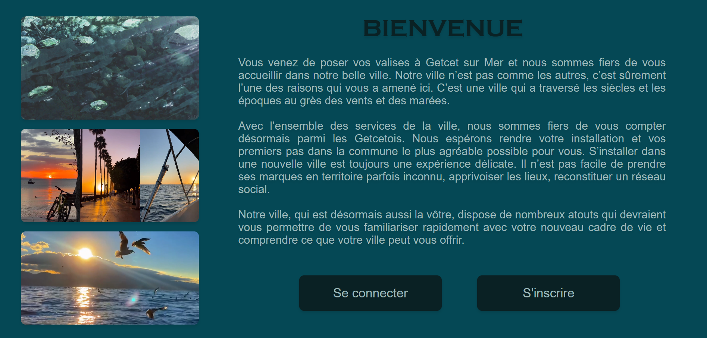

Nouvelle Vague | Mars 2025
Contexte : Initiation CodeIgniter
Support : Structure CodeIgniter
Mission : Créer une application CodeIgniter en binôme
J'ai codé le rôle des arrivants d'une ville fictive qui ont accès à un site qui leur permet de :
- Créer un compte
- Modifier leur profil
- S'inscrire à des activités